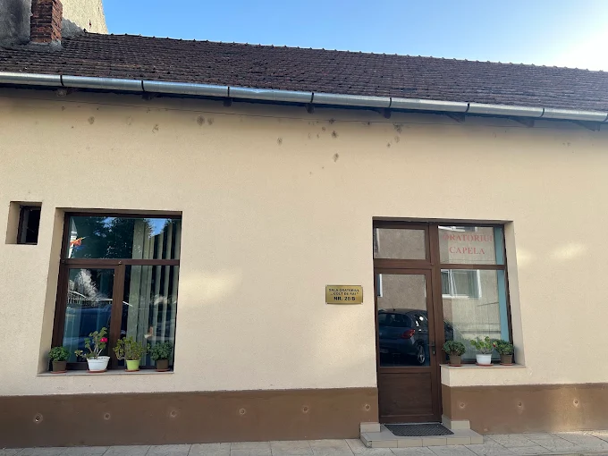

Imagine provizorie
Imagine provizorie
Palatul Episcopal
Clădire a Parohiei Greco-Catolice, care așteaptă un proiect de renovare.
Află mai mult„Și lumina luminează în întuneric, și întunericul nu a cuprins-o.”
Ioan 1, 5
Aici va rula video-ul filmat în biserică.
La Biserica „Sfinții Trei Ierarhi” din Beiuș.
Orele afișate sunt provizorii.
Se încarcă programul…
Imagine provizorie
Clădire a Parohiei Greco-Catolice, care așteaptă un proiect de renovare.
Află mai mult
Biserica parohiei greco-catolice din Beiuș, sfințită în 2002. Aici se țin slujbele din programul de mai sus.
Află mai mult
Centrul parohiei pentru copii și tineri: întâlniri în fiecare vineri, colinde, pelerinaje și o tabără în fiecare vară.
Află mai multCe acte sunt necesare și pe cine contactați pentru Botez, Cununie și celelalte slujbe.
[Actele necesare, alegerea nașilor și cum se stabilește data.]
[Actele necesare, termenul de anunțare și pregătirea mirilor.]
[Când se poate face spovedania și cum se programează.]
[Când se oficiază și cum se solicită pentru bolnavi.]
[Pe cine contactați și ce trebuie pregătit.]